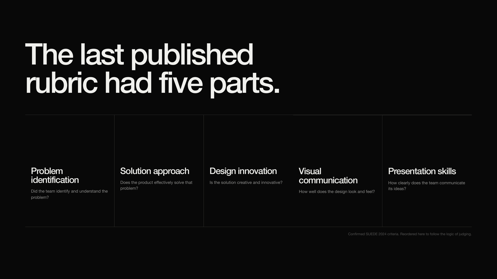
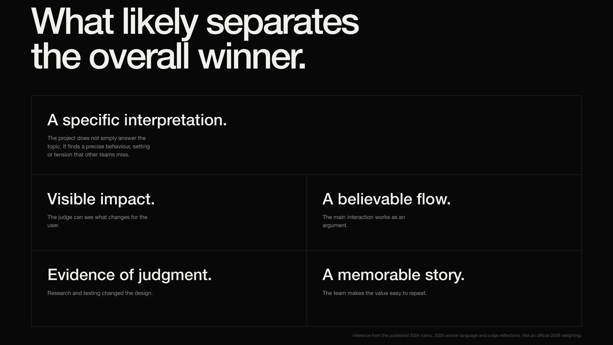

Evidence appendix · orientation
What the brief asks us to prove.
Our user-provided working brief is to design an experience that reveals, communicates, questions or redesigns an unwritten rule.
01Problem identificationOne person, moment, cause and evidence.
02Solution approachA visible mechanism that answers that cause.
03Design innovationA distinct behavioural interpretation, not feature novelty.
04Visual communicationHierarchy and craft that make the experience legible.
05Presentation skillsOne memorable story, one clear demo, honest proof.



 design target
design target